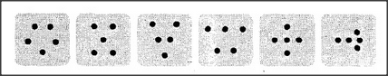

Why do we find it so hard to explain the meanings of things? Because what something means depends upon each different person's state of mind. If so, you might suspect that nothing means exactly the same thing to any two different persons. But if that were the case, where could you start? If every meaning in a person's mind depended on all the other meanings there, wouldn't everything go in circles? And if you couldn't break into those circles, wouldn't it all become too subjective to make good science? No. There is nothing wrong with phenomena in which many things depend on one another. And you don't have to be in those circles in order to understand them; you simply have to make good theories about them. It is a pleasant dream to imagine things being defined so perfectly that different people could understand things in exactly the same ways. But that ideal can't be achieved, because in order for two minds to agree perfectly, at every level of detail, they'd have to be identical.
The closest we can come to agreeing on meanings is in mathematics, when we talk of things like Three and Five. But even something as impersonal as Five never stands isolated in a person's mind but becomes part of a huge network. For example, we sometimes think of Five for counting things, as when we recite One, Two, Three, Four, Five while taking care l) to touch each thing only once, and 2) never to touch anything more than once. One way to ensure that is to pick up each thing as it's counted and remove it. Another way is to match a group of things to a certain standard set of Five — such as the fingers of your hand — or to that silent stream of syllables spoken in the mind. If, one by one, the things are matched and none are left behind, then there were Five. Another way to think of Five is to imagine some familiar shape — a pentagon, an X or V or W, a star, or even an airplane:
That way, a child might even come to understand a larger number before a smaller one. I actually knew one child who seemed to know Six before she knew Five, because she'd played so much with sets of triangles and hexagons.
Each number meaning works in different problem worlds. To ask which meaning is correct — to count, match, or put into groups — is foolishness: each method helps the others, and all of them together make a mass of skills that grow in power and efficiency. The really useful meanings are not the flimsy logic chains of definitions, but the much harder-to-express networks of ways to remember, compare, and change things. A logic chain can break easily, but you get stuck less often when you use a cross-connected meaning- network; then, when any sense of meaning fails, you simply switch to another sense. Consider, for example, how many different Twos a child knows: two hands, two feet, two shoes, two socks, and all their interchangeabilities. As for Threes, recall the popular children's tale about three bears. The bears themselves are usually perceived as Two and One — Momma and Poppa Bear, plus Baby Bear. But their forbidden porridge bowls are seen as quite another sort of Three:
too hot, too cold, and then just right; a compromise between extremes.